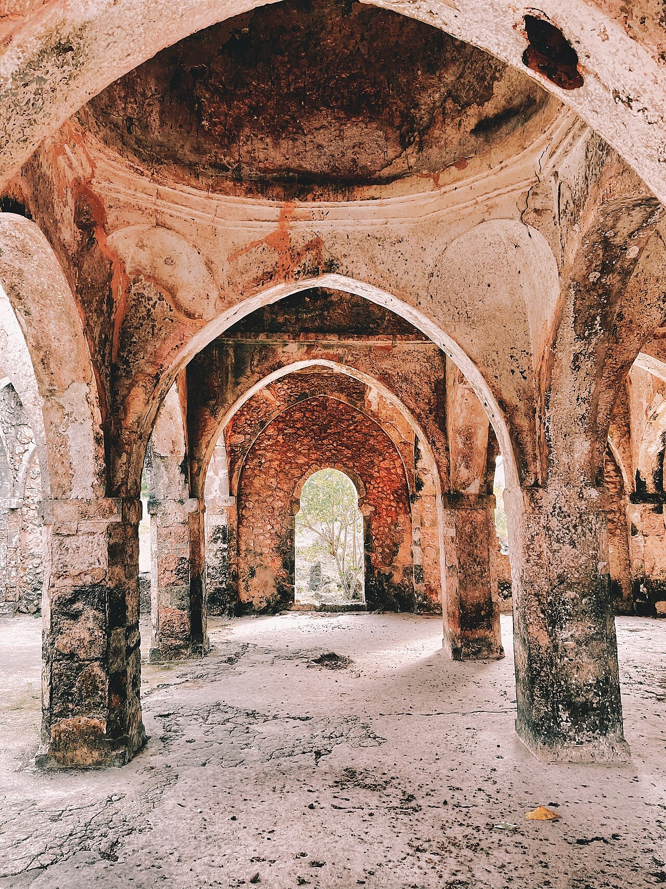

Official Site Dossier & Maps · Kilwa Kisiwani and the Swahili Coral-Stone Towns ↗
Primary institutional boundary map, conservation reporting, and site gazetteer for Kilwa Kisiwani and the Swahili Coral-Stone Towns.
Deep dives / Africa & Middle East
Dotting the East African shoreline and offshore islands from Kenya through southern Tanzania, Swahili port towns linked African interior gold, ivory, timber, and iron networks to monsoon-driven Indian Ocean commerce. Beneath iconic white coral ruins lie centuries of earlier African earth-and-timber towns.
Archaeological sequences across Gedi, Chwaka (Pemba), Unguja Ukuu (Zanzibar), Kilwa Kisiwani, and Songo Mnara, c. 550–1600 CE.

Swahili coast islands and coastal townlands from central Kenya to southern Tanzania.
c. 800–1505 CE
Southern Swahili island capital famous for the domed Great Mosque, Husuni Kubwa clifftop palace, copper/silver coins, and nearby Songo Mnara. [1] [2] [3] [12] [13] [14]
-8.96°, 39.51°c. 550–950 CE
First-millennium trading harbor built in wattle-and-daub architecture mixing Tana ceramics, Gulf imports, and Asian rice. [4] [5] [6]
-6.31°, 39.37°c. 1050–1550 CE
Urban neighborhood sequence showing four superimposed Porites coral mosques amidst earthen houses. [7]
-4.96°, 39.81°c. 1050–1650 CE
Walled coastal forest town with palace, pillar tombs, Friday Mosque, and mangrove creek outports. [8] [9]
-3.31°, 40.02°c. 750–1400 CE
Northern Swahili island cluster charting the gradual timber-to-coral transformation of coastal mosques. [9] [7]
-2.13°, 41.03°Earlier colonial scholarship falsely portrayed Swahili towns as foreign Arab colonies. Stratified excavations at Unguja Ukuu, Chwaka, and Kilwa refute that claim: early towns grew directly out of Bantu-speaking coastal Iron Age fishing and farming communities using local Tana Tradition pottery centuries before coral-stone mosques replaced timber-and-daub architecture. [5] [9] [7]
Between the eleventh and fifteenth centuries CE, elite Swahili merchants shaped fresh marine Porites coral and lime mortar into vaulted mosques, multi-story courtyard houses, and clifftop palaces such as Husuni Kubwa at Kilwa Kisiwani, surrounded by dense wattle-and-daub urban quarters. [1] [2]
| Swahili Town | Primary Dating | Characteristic Archaeology | Sources |
|---|---|---|---|
| Unguja Ukuu | c. 550–950 CE | Wattle-and-daub trade harbor, Siraf pottery, Asian rice & cotton | [5] [6] |
| Chwaka (Pemba) | c. 1050–1550 CE | Four sequential coral mosques surrounded by earthen houses | [7] |
| Gedi & Mida Creek | c. 1050–1650 CE | Inland forest stone town linked to creek anchorages | [8] |
| Kilwa Kisiwani & Songo Mnara | c. 800–1505 CE | Great Mosque, Husuni Kubwa palace, local minting, Portuguese fort (1505) | [1] [3] |
Recent urban archaeology at Songo Mnara and Zanzibar examines everyday domestic space alongside material signatures of inequality and enslaved labor that sustained maritime ports. Portuguese warships bombarded Kilwa and constructed Fort Santiago in 1505, disrupting independent Swahili monsoon commerce. [10] [11] [3]
Published excavations and remote-sensing surveys across Kilwa Kisiwani & Songo Mnara, Unguja Ukuu (Zanzibar), Chwaka (Pemba Island) distinguish monumental construction events from long centuries of everyday craft, agricultural provisioning, and ritual reuse—relying on radiocarbon series, ceramic seriation, epigraphy, and geoarchaeological sediment cores rather than unverified royal annals alone. [1]
Exchange connections preserved across metallurgical ores, timber/stone sourcing, exotic prestige wares, and architectural styles demonstrate how each local horizon sat inside much broader continental corridors across africa. [2]
Ongoing conservation balancing living community custodianship, climate/erosion stressors, and non-invasive geophysical mapping continues to refine older 19th- and 20th-century excavation hypotheses. Map coordinates pinpoint documented archaeological properties and research zones rather than rigid ancient territorial borders. [12] [1]
Open the source maps for their original detail, legends and dates. Their coverage and reproduction terms belong to the issuing institution.
Primary institutional boundary map, conservation reporting, and site gazetteer for Kilwa Kisiwani and the Swahili Coral-Stone Towns.
Open this era on global Explore ↗ Open Africa & Middle East atlas ↗ Climate, sea level & ice-sheet context ↗
Sources checked and linked above; geological and historical dating methods follow the primary papers.